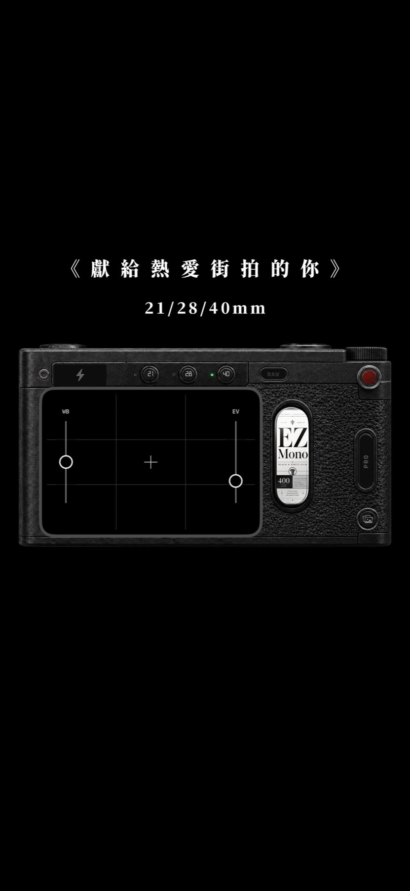
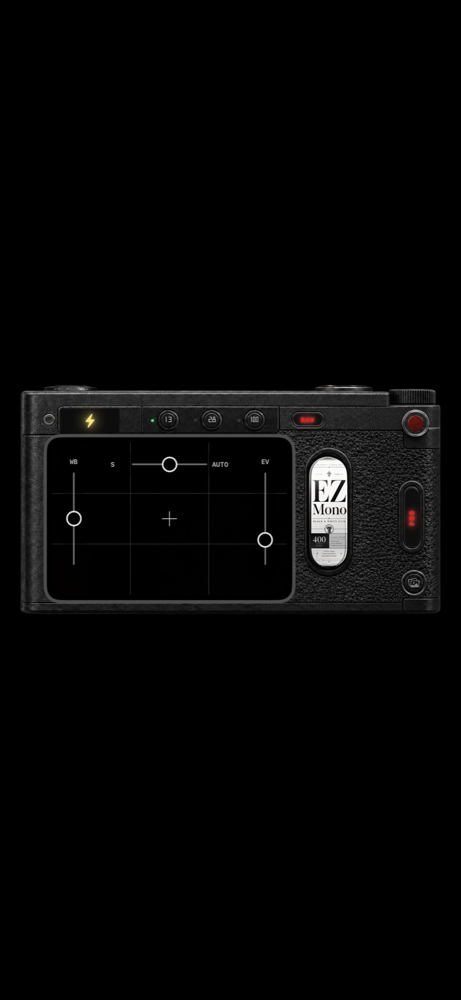
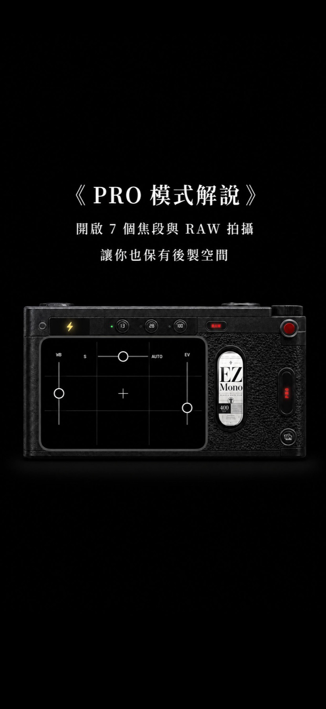
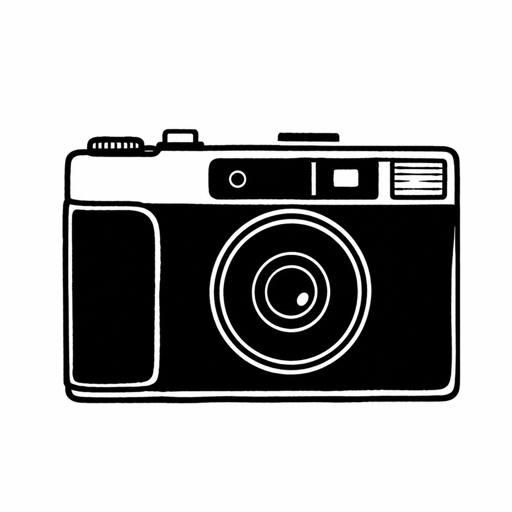

MONO HARD
硬調黑白、清楚邊緣與陰影顆粒，為光影與幾何而生。
A street camera for iPhone
把手機變成一台直接、快速、有手感的街拍相機。少一點選單，多一點在街上的專注。

EZ Cam 把街拍最重要的事情留在眼前：焦段、距離、光線與瞬間。介面像一台真正的相機，讓手指記得怎麼操作，視線不用離開街道。
不用換算 0.8× 或 1.7×。EZ Cam 直接使用攝影師熟悉的等效焦段，讓構圖回到直覺。
橫向機身、清楚觀景窗、實體感按鍵。EZ Cam 不要求你學一套手機介面，而是把相機的操作邏輯放進 iPhone。

直接調整冷暖，讓光線符合你當下看到的街景。
快速壓暗高光或拉起陰影，不必離開觀景窗。
觸控紅色快門，也支援 iPhone 相機控制鍵。
不是事後再選濾鏡。拍攝前就決定你要用哪一卷底片看世界，按下快門後直接完成顯影。
硬調黑白、清楚邊緣與陰影顆粒，為光影與幾何而生。
溫暖色彩、柔和銳度與細緻顆粒，適合日常街道與人物。
為夜色打造的電影感，高光帶著橙紅光暈，保留城市的氣氛。
預先對焦讓 EZ Cam 先準備好你要的拍攝距離。人物走進畫面時，省下等待自動對焦的時間，把決定性的瞬間留住。
PRO 模式把街拍攝影師真正需要的進階功能打開：更多焦距、RAW，以及最重要的手動快門速度。

從超廣角到望遠，依照你的 iPhone 相機系統開啟更多構圖選擇。
同時保留完成照與原始檔。現在可以直接分享，之後仍然擁有重新後製的空間。
街拍常用的 Tv／S 模式：自行決定快門速度。凝結迎面走來的人，或刻意保留城市移動的軌跡。
這裡已保留給 EZ Cam 真實拍攝的街道、人物與夜色。

真實街拍體驗，裝進你的 iPhone。